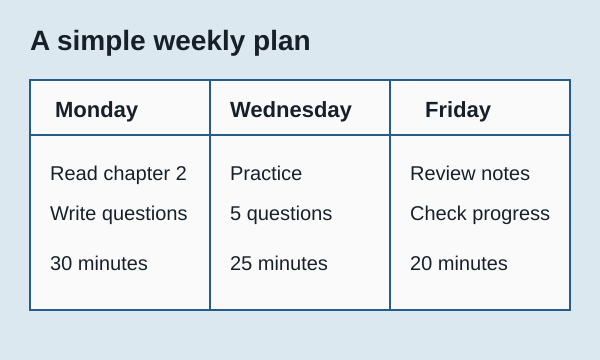

Study Planning

Make a plan you can follow
Start with your classes, work hours, and assignment deadlines. Add study blocks that fit around those commitments. Leave time for breaks and tasks that take longer than expected.
Choose a clear task for each block, such as reading one chapter or solving five practice questions.
List your deadlines
Check each course calendar. Write down the due date and the next step for every assignment.
Break up the work
Split a large task into smaller steps. For a paper, plan separate times to research, outline, write, and edit.
Review your plan
At the end of the week, check what you finished. Move unfinished work and adjust the next week's plan.
Try a study block today
- Pick one task and gather the materials you need.
- Work for 25 minutes with notifications off.
- Take a short break, then check your progress.
Adjust the length of the block to suit the task. Read Cornell's study schedule guide for more planning ideas. Then try a method from the Note-Taking page.